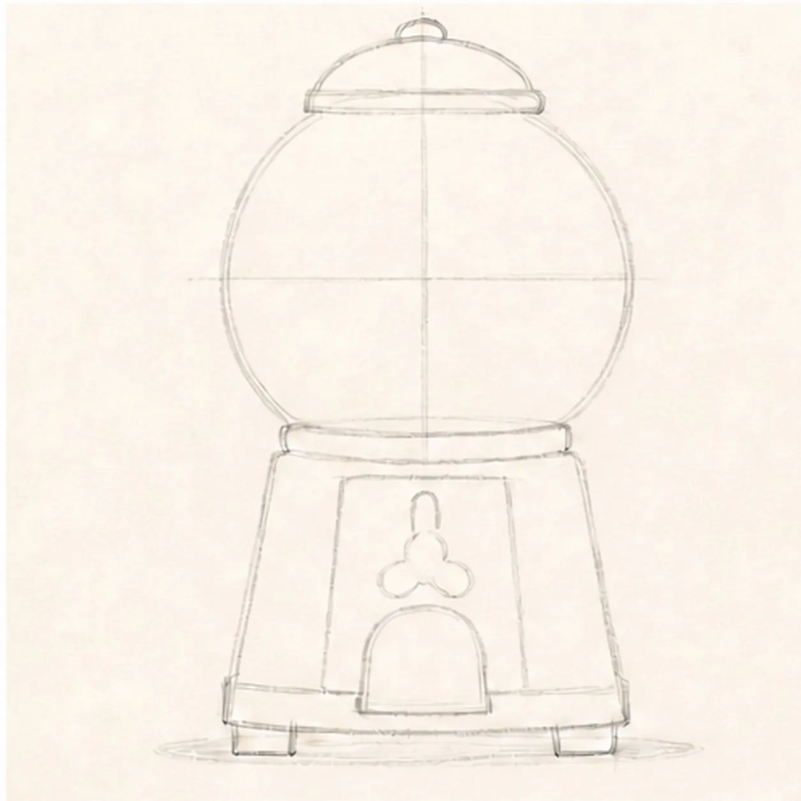
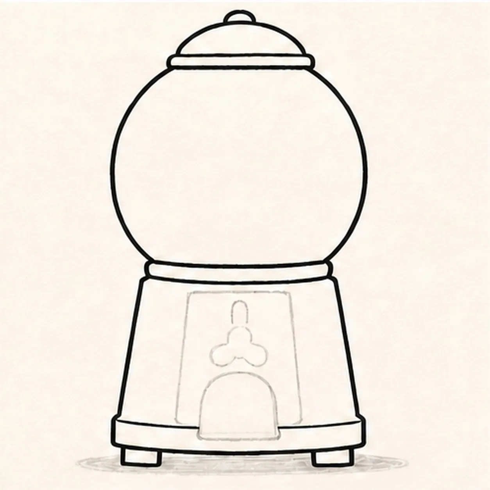
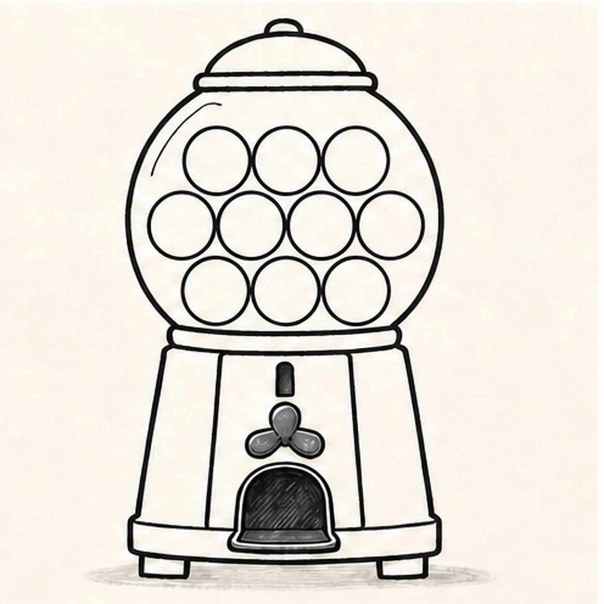
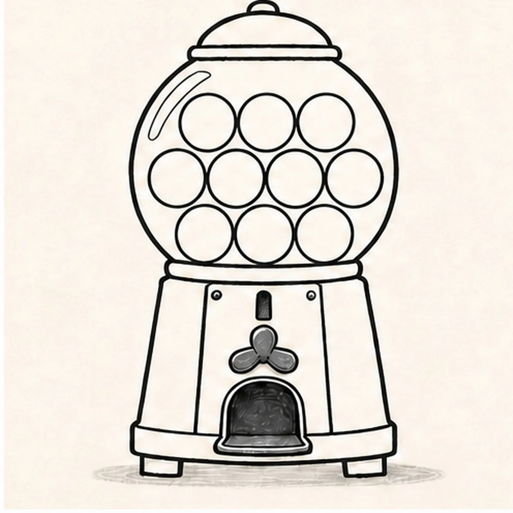
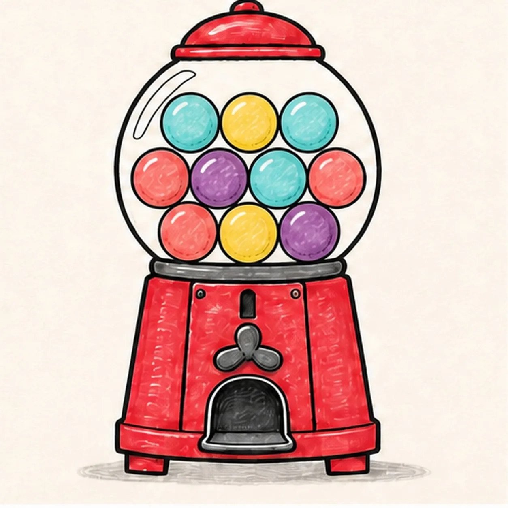

Felt-tip marker mode
Let's draw a cartoon gumball machine
Treat this as one playful practice round: sketch the idea loosely, simplify the shapes, then commit with confident marker outlines and bright fills.
-
01

Stack the machine guides
Draw a light round globe over a broad cabinet box, then reserve the domed cap, neck ring, front controls, dispenser chute, two feet, and one shallow shadow footprint.
Marker tip: Ghost the globe twice before touching down and use a center line to stack the cap, handle, chute, and cabinet. Keep the cabinet a little wider at the bottom so the machine feels sturdy.
-
02

Build the candy-shop silhouette
Wrap the guides with the round globe and thick rim, domed cap, neck ring, broad cabinet base, two short feet, and the reserved front control and chute panels.
Marker tip: Rotate the page for the globe curve and pull the two cabinet sides in relaxed passes. Compare the feet against the center line so the machine does not lean.
-
03

Load the globe and controls
Add exactly ten large gumball circles in three rows inside the globe, then draw one narrow coin slot, one three-lobed turn handle, and one dark dispenser-chute opening.
Marker tip: Count three circles in the top row, four in the middle, and three on the bottom. Let neighboring circles touch without overlapping so all ten remain easy to count.
-
04

Add glass and cabinet details
Add two curved glass highlight strokes, simple cabinet edge seams, two small screw dots, one chute lip, and one shallow warm-gray oval shadow.
Marker tip: Place the highlights along the globe curve and keep the two screws level with each other. These small marks should clarify the machine, not decorate every empty space.
-
05

Fill the candy-shop color
Thicken every established contour and fill the cap and cabinet cherry red, the ten gumballs aqua, yellow, coral, and purple, the hardware charcoal, and the shadow warm gray while preserving paper highlights.
Marker tip: Color one gumball at a time and recount after every row. Leave a few dry-marker streaks in the red cabinet so the finish still feels handmade.
-
06

Polish the gumball machine
Strengthen the keeper outlines and clarify the established globe, ten gumballs, cap, neck, cabinet, coin slot, handle, chute, screws, feet, limited fills, paper highlights, and shallow shadow.
Marker tip: Count ten gumballs, two screws, and two feet, then stop. A face, price label, candy spill, sticker edge, or badge frame would turn this clean machine study into a different lesson.
![Handmade face-free felt-tip marker drawing of one thick forest-green garden hose forming one loose lower-left loop with a single over-under crossing, connected to one burnt-orange pistol-grip spray nozzle angled toward the upper right with one open-paper barrel collar, one cream trigger, one cream connector, exactly three black handle grip ribs, exactly three curved muted-blue water jets, exactly two detached blue drops, one open-paper highlight on the hose and one on the handle, thick imperfect black outlines, visible marker streaks, and one short flat irregular deep-navy ground-shadow patch](../assets/garden-hose-with-spray-nozzle-finished-v1.webp)
![Handmade face-free felt-tip marker drawing of one plump raspberry-and-coral heart tilted slightly clockwise with one teal adhesive bandage crossing diagonally from lower left to upper right, one warm-yellow center pad, two rounded adhesive ends with exactly four open-paper ventilation dots total, two open-paper oval heart highlights, exactly two small warm-yellow sparkle accents, thick imperfect black outlines, visible marker streaks, a few pale construction traces, and one broken deep-navy shadow](../assets/heart-with-a-bandage-finished-v1.webp)
![Handmade face-free felt-tip marker drawing of one open book in a shallow three-quarter view with exactly two blank page blocks, one black V-shaped center gutter, one coral ribbon bookmark hanging from the gutter, one small curled outer corner on each page, exactly three stacked warm-yellow lower page-edge bands per side, raspberry marker fill across the left page and cover plane, teal marker fill across the right page and cover plane, small open-paper cover-edge highlights, thick imperfect black outlines, visible marker streaks, restrained edge hatching, and one broken deep-navy shadow](../assets/open-book-with-ribbon-bookmark-finished-v1.webp)